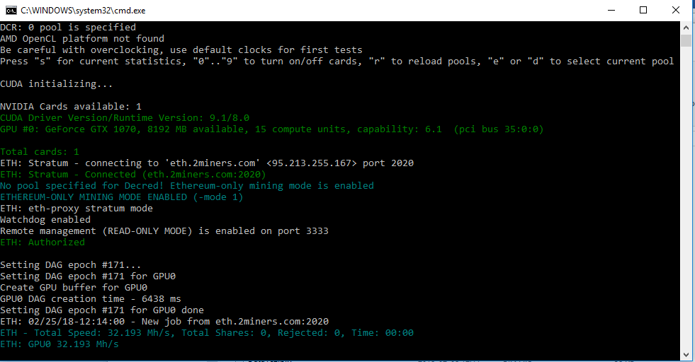

Claymore's Dual Ethereum AMD+NVIDIA GPU Miner
Самый быстрый Ethereum/Ethash майнер с самой низкой комиссией
Claymore ETH. Настройка Dualminer
Давайте рассмотрим инструменты, которые нужны вашему компьютеру для эффективной работы майнера. Вот все, что вам нужно для майнинга Ethereum:
- Кошелек Ethereum для хранения всей вашей недавно найденной валюты;
- Драйверы видеокарты;
- Майнинг приложение (Claymore майнер);
- Адрес майнинг-пула, если вы собираетесь майнить на майнинг-пуле;
- Видеокарта (GPU) с объемом оперативной памяти не менее 3 ГБ;
- Совместимая операционная система (Windows 7 или 10 64bit).
Создать цифровой кошелек
Вам нужно создать цифровой кошелек, в котором вы сможете хранить свой эфир. Вы можете следовать инструкциям по созданию кошелька здесь.
Установка драйверов видеокарты
Когда ваш цифровой кошелек настроен и готов, пришло время обновить программное обеспечение на вашем компьютере. Процесс майнинга будет более прибыльным, если на вашем оборудовании будут установлены все последние обновления. Так что обновите ваши драйверы сейчас.
Для пользователей видеокарт AMD
Если у вас есть видеокарта AMD, вы можете скачать последние версии драйверов для вашей карты здесь.
Для пользователей видеокарт Nvidia
Если у вас есть видеокарта Nvidia, вы можете скачать последние версии драйверов для вашей карты здесь .
Загрузите и установите драйверы в зависимости от того, какую видеокарту вы используете.
Установка программного обеспечения Ethereum для майнинга
- Перейдите на сайт Claymore для загрузки: https://claymoredualminer.com/ru
- Загрузите последнюю версию Claymore dual miner. При нажатии на выделенную ссылку. На сегодняшний день самая последняя версия - 15.0.
- Дождитесь окончания загрузки. Сохраните файл на рабочем столе для быстрого доступа.
- Извлеките файлы Claymore v15.0 в папку на рабочем столе для быстрого доступа.
- Откройте папку, которую вы только что извлекли, чтобы просмотреть файлы, она должна выглядеть следующим образом.
- Щелкните правой кнопкой мыши на пакетном файле
- Нажмите Изменить
- Отредактируйте файл с нужной монетой и вставьте следующие строки:
- Сохраните файл с новыми значениями, перейдя в файл -> сохранить как
- Измените имя файла на start.bat
- В поле «Тип файла»: выберите Все файлы
- Нажмите «Сохранить» и нажмите « Да» , когда вас спросят, хотите ли вы заменить файл
- Дважды щелкните Start.bat, чтобы начать майнинг на свой кошелек
- Если вы выполнили все шаги, описанные выше, вы должны увидеть этот экран.

- Откройте ваш майнер и проверьте, сколько мегахашей в секунду отправляет ваше оборудование (Mh/s)
- Мы видим, что наш один графический процессор GTX 1070 разгоняется до 32,2 Mh/s.
- Откройте калькулятор майнинга здесь.
- Введите ваши Mh/s, стоимость электроэнергии и энергопотребление. Вы получите средние результаты, основанные на том, сколько стоит 1 ETH в то время.
- Если вы планируете оставить свой компьютерный майнинг на длительные периоды времени, вот несколько вещей, которые вы можете сделать, чтобы избежать простоев.
- Настройки питания компьютера: по умолчанию, если ваш компьютер не используется в течение длительного периода времени, он «перейдет в спящий режим». Как только ваш компьютер перейдет в спящий режим, он прекратит майнинг. Чтобы избежать этого, перейдите к настройкам питания и убедитесь, что ваш компьютер никогда не уходит в спящий режим.

EthDcrMiner64.exe -epool -ewal -epsw x
Выберите свой пул из одного из этих рекомендуемых майнинг-пулов Ethereum.
Примечание: эти адреса пула для региона Европы. Если вы живете в США или Азии, вы можете получить лучшие результаты, используя адреса, которые ближе к вашему региону. Посетите сайт пула и выясните, поддерживает ли этот пул ваш регион.
Вместо <Mining_Pool_Address> введите адрес вашего пула.
Вместо <Your_Ethereum_Wallet_Address> введите адрес вашего кошелька:

Как только вы закончите, это должно выглядеть так:

EthDcrMiner64.exe -epool us1.ethermine.org:4444 -wal 0x9147460980c93629e775783148591b7d0a0cbf2d.Claymore -epsw x
если вы используете myetherwallet, вы можете найти свой адрес кошелька, зайдя на https://www.myetherwallet.com/ и проверить адрес счета.
Это оно! Ваш компьютер сейчас добывает Ethereum. Оставьте этот экран открытым. Для этого примера мы использовали пул Ethermine и MyEtherWallet . Но вы можете использовать другие кошельки и другие майнинг пулы.
Как проверить, сколько вы добыли?
У каждого пула свой интерфейс, но принцип остается тем же. Вам нужно будет зайти на сайт вашего пула и ввести адрес вашего кошелька. Давайте используем Ethermine в качестве примера.
Вы вводите свой адрес кошелька в строке поиска, и вы сможете увидеть всю информацию о ваших усилиях по добыче Ethereum. В случае пула Ethermine, когда ваш баланс достигнет 0,01 ETH, он будет отправлен на адрес вашего кошелька, который вы ввели в файл start.bat ранее.
Как рассчитать прибыль
Секреты и уловки
Теперь ваш компьютер может работать весь день без сна.
Заключительные мысли
Используя Ethereum, вы помогаете ему оставаться децентрализованным и получать вознаграждение в процессе. Вы должны смотреть на Эфириум как на ценный актив для хранения или торговли. Технология blockchain и сеть Ethereum уже доказали свою ценность. Несколько децентрализованных приложений уже нашли успех. Реакция рынка кажется превосходной. Поскольку все больше людей начинают строить децентрализованные приложения на платформе, которую создал Ethereum, мы должны увидеть еще большие результаты в будущем!
Проект Claymore представляет самые последние версии программного обеспечения (исправляет все ошибки и баги предыдущих версий)! Поэтому если у Вас старая версия, мы настоятельно советуем скачать последнюю версию Claymore's по ссылкам ниже, так как с каждым выходом новой версии добыча Эфира становится выгоднее!
Ресурсы для разработчиков
- What is Ether? Read our FAQ
- Browse our source code on GitHub
- Read the documentation or wiki
- Learn Solidity
- See the latest data and network stats
- Download our logo assets
- Want to write about Ethereum? Press inquiries
- switch to the English language.